直近1週間の更新
11/29 (日)
個性(ペルソナ)と感情をもった対話AI「FureAI ペルソナ」を作ってみた(番外編)  LLMタグが付けられた新着記事 - Qiita
LLMタグが付けられた新着記事 - Qiita
キャラクタを設計する道具「ペルソナデザイナ」いまの状態(2026-11-29 時点)FureAI ペルソナは、ポートフォリオとして公開している個人開発のプロジェクトです。サービスは一般公開していません。 Azure の開発用の環境(dev)で、開発者と、招待した協...
17分前
【Oracle AI Data Platform】Agent に売上目標と出荷を突き合わせる Spark SQL ツールを足す：ツールの中の JOIN は時間切れ、Delta 表に集計しておく 生成AIタグが付けられた新着記事 - Qiita
初めに前回の記事では、Object Storage の CSV を Auto-populate catalog で external table にしました。これで Oracle AI Data Platform（以下 AIDP）に、受注（External Catalo...
1時間前
【文献メモ】正規化層を移動・追加して Transformer を安定化する ― Pre-LN, Sandwich-LN, Peri-LN 機械学習タグが付けられた新着記事 - Qiita
Transformer の学習を安定化する試みのうち、正規化層の配置を変更するものとして、正規化層をサブ層入口に移動する Pre-LN [Xiong2020] と、Pre-LN に加えてサブ層出口 (残差接続合流前) にも正規化層を追加する Sandwich-LN [Din...
2時間前
結論：Parallel はどう使うのが正解か
LLMタグが付けられた新着記事 - Qiita
この回の趣旨シリーズ第 1 回（https://qiita.com/Mt-yutto/items/059e6e489bb9dd3d427f）では Parallel と通常の Web 検索の正面対決を、第 2 回（https://qiita.com/Mt-yutto/it...
2時間前
Parallel の設定、効くものと効かないもの LLMタグが付けられた新着記事 - Qiita
この回の趣旨シリーズ第 1 回（https://qiita.com/Mt-yutto/items/059e6e489bb9dd3d427f）では、同じ 10 クエリを Parallel と通常の Web 検索に投げ、候補の重なりが小さく、公式文書の発見では Parall...
2時間前

AIが引いた公式の文が、原文にそのままあるか。Pythonで機械的に探す 生成AIタグが付けられた新着記事 - Qiita
AIに記事を書かせると、公式ページの文を「」で引いてくれます。その「」の中が、原文と一字ちがうことがあります。読点が1つ少ない、語が似た別の語になっている、意味が逆になっている。目で読み比べると、見落とします。そこで、「」の中身が、原文のファイルにそのままあるかを、機械で...
2時間前

工場自動化のプログラミングを「数週間から数分」へ：AIデプロイメントが変えるロボティクス実務 AIタグが付けられた新着記事 - Qiita
概要製造業や物流現場における自律化・自動化の試みにおいて、最大のボトルネックの一つとなってきたのが「ロボットプログラミングとティーチングにかかる時間とコスト」です。従来、産業用ロボットアームや周辺機器を導入し、現場の工程に合わせた動作プログラムを構築・検証するには、熟練...
2時間前
Parallel を使うと検索はどう変わる？10クエリで正面対決した結果 LLMタグが付けられた新着記事 - Qiita
このシリーズについてAI エージェントに Web 検索をさせる手段として Parallel Web Systems を使う場合と、使わずに通常の Web 検索で済ませる場合とで、結果はどれだけ違うのか。全 3 回で、同じ条件での実測をもとに切り分ける。第 1 回は正面対...
2時間前

面談の録音からスキルシートを作る AI を、Dify と Salesforce で作った 生成AIタグが付けられた新着記事 - Qiita
はじめに人材派遣の会社では、候補者との面談のあとに、担当者が話の内容を整理して スキルシート や 推薦文 を作ります。この作業は時間がかかるうえに、人によって書き方がばらつく のが悩みでした。そこで、面談の録音を上げるだけで、AI が文字起こしからスキルシート・推薦...
2時間前

【書評】AIプロジェクトの管理（Managing AI Projects） AIタグが付けられた新着記事 - Qiita
はじめに「AIを使ったプロジェクトは、普通のソフトウェア開発と何が違うのか」設計やアーキテクチャに関心のあるエンジニアなら、一度は考えたことがあるのではないでしょうか。バックログもスプリントもロードマップもあるのに、なぜかAIプロジェクトだけは計画どおりに進まない。こ...
2時間前
「Attention Is All You Need」を読む：Transformer はそれまでの翻訳モデルと何が違い、なぜ大事なのか AIタグが付けられた新着記事 - Qiita
「Attention Is All You Need」を読む：Transformer はそれまでの翻訳モデルと何が違い、なぜ大事なのかTransformer は、再帰も畳み込みも使わず、Attention という仕組みだけで組み立てた系列変換モデルです。Vaswani ...
2時間前
Cloudflare Radar実測データで見る日本のAIボット比率（ClaudeBot 13.39%）と個人VPS・ブログの無料防御メモ AIタグが付けられた新着記事 - Qiita
本記事は技術検証メディア SiliconBench で取得した Cloudflare Radar API v4 の公開実測データ（対象期間: 2026-10-31T14:00:00Z 〜 2026-11-28T14:00:00Z、直近 28 日間）に基づく要点メモです。図...
2時間前
11/28 (土)

【新資格】Google Cloud Professional Agentic Architectとは？全冠保持者が試験範囲と対策を調べてみた 生成AIタグが付けられた新着記事 - Qiita
Google Cloud の資格を眺めていたところ、いつの間にか見慣れない資格が増えていました。その名も、Professional Agentic Architectです。「Agentic……Architect……？」生成AI系の資格としてはすでに Generat...
3時間前

ノイズ除去：技術解説 DeepLearningタグが付けられた新着記事 - Qiita
ノイズ除去：技術解説概要統計的・深層学習的手法でノイズを効果的に除去。詳細このトピックの詳細については、G検定公式教材を参照してください。わかりやすい初心者向け解説はキッズ版の記事をご覧ください。おすすめの学習リソースG検定対策の学習に役立つリ...
5時間前

claude doctorを実測する：CLIの接続診断と、セッション内でやるprompt-audit Zennの「AI」のフィード
claude doctor を実際に叩いて確かめた結果から書きます。 ターミナルの claude doctor（CLI）は、インストール状態とAPI接続の診断を返す。サインインなしでも実行できる CLAUDE.mdの監査（prompt-audit）はCLIでは走らない。claude doctor prompt-audit と打っても、返ってくるのは標準の診断出力だけだった（v2.1.332で実測） 監査を含む完全な診断は、Claude Codeのセッションの中で /doctor を実行する。公式ヘルプにも「For a full checkup that can also fix issu...
6時間前

圏外の建設現場で一日中聞いてくれる「現場手帳」 ～ローカルLLMとクラウドAIのハイブリッド構成～ Zennの「大規模言語モデル」のフィード
本記事の内容は2026年11月28日時点の情報に基づいています。Surface Laptop Ultraの実機検証をした結果ではありません。実機の数値はすべて公開されているレビューや資料からの引用で、試していないことは「未検証」と書いていますのでご注意ください！ 最近、建設業で働く友人と話すことが多く、建設業の、営業、バックオフィス、現場監督などなど、AIなどが活用できるシーンは多そうだぞ？と感じているこの頃です。 この記事の「現場手帳」も、建設業の方に意見を聞いたりヒアリングしたりしながら立てたアイデアです。 構想だけだと、現場でどう使うのかが伝わりにくいですよね。なので、動くデモ（P...
6時間前

AIエージェントにモデリングからMakerWorld登録まで任せて、スマホから3Dプリントする Zennの「AI」のフィード
歯磨き粉チューブをケースの中で立てるために、穴が3つ空いたスペーサープレートを AI エージェントの Muse に作ってもらった。Muse がモデリングから MakerWorld への仮登録まで進め、最後に自分がスマホの Bambu Handy から A1 mini で印刷を開始した。 面白かったのは、使う道具も手順も、ほとんど指示していないこと。OrcaSlicer を使うことも、Muse が自分で決めていた。 Muse は Meta のパーソナル AI エージェント。チャットでやりたいことを伝えると、専用の Linux 環境やブラウザーを使って、複数の手順が必要な作業を進めてくれる。...
6時間前
AI時代のセキュリティ地図 ― 5つの制御点で「何が変わり、何が変わらないか」を整理 Zennの「AI」のフィード
本記事は個人の見解であり、所属する組織の公式見解ではありません。また、AI Agent向けセキュリティ製品のカテゴリ名や定義はベンダー・調査会社ごとに異なり、市場は形成途上です。記載内容は2026年11月時点の整理であり、今後変わる可能性があります。 AI Agentが社内に入り込み、攻撃者もAgentを使い始めました。「AI向けのセキュリティ製品が次々に出てくるが、既存の製品とどう違うのか」「全部入れ替えるのか、足すだけで済むのか」という疑問を持つ方は多いと思います。 本記事では、従来のセキュリティ製品の地図を出発点に、AI Agent時代に何が変わり、何が変わらないのかを整理します。...
6時間前

AI に10分の発表を作らせたら、原稿は5分ぶんで、スライドは1枚100字だった。人の資料から作った手順で比較した Zennの「AI」のフィード
AI エージェントに「このメモから、来週の月例会で10分話す発表を作って。スライドと原稿を」と依頼すると、見た目の整った .pptx と原稿が返ってきます。私はこれを3回試し、原稿は3回とも 1,300〜1,600 字でした。1分に約 300 字で話すとすると、約5分ぶんです。聞き手に一番関係のある話は、3回のうち2回、発表の後半か最後にありました。 原稿がすでにある場合も、スライドには別の癖が出ます。同じ10分の原稿から作らせた .pptx は、1枚の文字が平均 100 字ほどで、紺と赤の数字のカードが並ぶ、どこかで見た形になりました。そこで、話す発表の組み立て方と、人が作った資料を測...
7時間前

ルールを増やすな、検証を自動化しろ Zennの「AI」のフィード
CLAUDE.mdの一番目立つ場所に「xxx/api/drizzle/配下のSQLは絶対に編集しないこと」と書いた日の夜、私はClaude Codeに修正を頼んで、コーヒーを淹れに席を立ち、数分後に戻ると、画面には 「0001.sqlを直接書き換えて直しました」 という無邪気なAIからの報告が表示されていました。 それを見た瞬間カッとなりましたが、握ったこぶしの行き先がわからず、とりあえず深呼吸 スーハー、すぅーはぁ〜 あんなにハッキリ「触るな」と書いたのにどうして無視するのかと頭を抱え、悔しくて設定を見直すと、CLAUDE.mdが参照していた@docs/conventions.mdはと...
7時間前
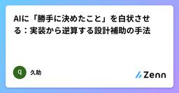
AIに「勝手に決めたこと」を白状させる：実装から逆算する設計補助の手法 1 Zennの「AI」のフィード
1 Zennの「AI」のフィード
AIを用いたシステム開発において、出力された成果物が期待通りでなく残念な気持ちになった経験のある人は少なくないと思う。 昨今のLLMはいずれも極めて優秀なコーディング能力を有するため、プロンプトが完全なものであればほぼ無欠と言っていいコードを出力として示すはずである。 そうならない原因の一部は、入力された仕様が十分なものでなく、結果としてAI側で実装時にアドホックな判断を繰り返している点にある。 例えば数値計算の結果を丸めるために四捨五入するか、切り捨てるか、などといった粒度の細かい要件はAIに与える初回の指示からは漏れやすい。 しかし金額計算を扱う業務基幹システムなどであれば非常に優先...
7時間前
AIに「勝手に決めたこと」を白状させる：実装から逆算する設計補助の手法 1 Zennの「大規模言語モデル」のフィード
AIを用いたシステム開発において、出力された成果物が期待通りでなく残念な気持ちになった経験のある人は少なくないと思う。 昨今のLLMはいずれも極めて優秀なコーディング能力を有するため、プロンプトが完全なものであればほぼ無欠と言っていいコードを出力として示すはずである。 そうならない原因の一部は、入力された仕様が十分なものでなく、結果としてAI側で実装時にアドホックな判断を繰り返している点にある。 例えば数値計算の結果を丸めるために四捨五入するか、切り捨てるか、などといった粒度の細かい要件はAIに与える初回の指示からは漏れやすい。 しかし金額計算を扱う業務基幹システムなどであれば非常に優先...
7時間前

GitHub Actionsは成功なのにAI新聞が発行されない：6回の実行ログから学んだこと Zennの「AI」のフィード
個人開発しているAI最前線新聞（AI FRONTIER）では、公式発表を収集し、日本語の記事を自動生成する仕組みを開発しています。 Web: GitHub: 前回は月額0円を目指す構成と、安全に発行を止める設計を紹介しました。 今回は、2026年11月26〜28日の実行ログを振り返り、GitHub Actionsの成功とプロダクトの成果を分けて観測する必要性を整理します。 日次発行ワークフローには、候補を取得して記事を生成し、品質基準を通過した場合だけ新号を作る仕組みがあります。 全候補が保留の場合、既存号を維持して正常終了します。そのため、Actionsの緑色のチェックだけでは新号の発...
7時間前
GitHub Actionsは成功なのにAI新聞が発行されない：6回の実行ログから学んだこと Zennの「大規模言語モデル」のフィード
個人開発しているAI最前線新聞（AI FRONTIER）では、公式発表を収集し、日本語の記事を自動生成する仕組みを開発しています。 Web: GitHub: 前回は月額0円を目指す構成と、安全に発行を止める設計を紹介しました。 今回は、2026年11月26〜28日の実行ログを振り返り、GitHub Actionsの成功とプロダクトの成果を分けて観測する必要性を整理します。 日次発行ワークフローには、候補を取得して記事を生成し、品質基準を通過した場合だけ新号を作る仕組みがあります。 全候補が保留の場合、既存号を維持して正常終了します。そのため、Actionsの緑色のチェックだけでは新号の発...
7時間前

Claude で作ったツールを Mac や Windows のアプリとして入れる ── Install as app の入れ方と消し方 Zennの「AI」のフィード
上原正吉（EarthLink Network Co., Ltd.）。AI会社・AI社員による業務自動化と、人の逐次介入なしに24時間自動開発を回す仕組みを自社で実践しています。開発ノウハウと具体的な設定方法、運用して分かった改善点を公開しています。 Claude のデスクトップアプリに、会話で作ったアーティファクトを Mac や Windows のアプリとして入れる「Install as app」がベータ版で入りました。自社の Mac で記事を書く時の集中タイマーを作り、入れて、開いて、閉じて、消すまでを試し、Windows の手順はヘルプ記事から 1 つの節にまとめました。 会話で作っ...
7時間前

月額0円を目指してAI新聞の自動発行システムを開発してみた Zennの「AI」のフィード
「AIって面白い」と感じる人を増やしたい。そんな思いから、AI最前線新聞（AI FRONTIER）を個人開発しています。 Web: GitHub: 今回は、月額0円を目指した自動発行の設計と、品質基準を満たさない記事を公開しない仕組みを紹介します。自動発行は開発・検証段階で、無料運用の実績を保証するものではありません。 公式発表を根拠にする。 根拠のない情報を公開しない。 無料枠を超えてまで発行しない。 改修はPRで検証し、人間が承認する。 GitHub Actionsが公式情報を収集し、根拠となる原文を選択します。選択した原文を使って日本語の記事を生成し、プログラムと別のAIレビュー処...
7時間前
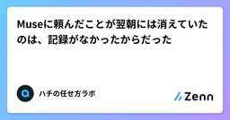
Museに頼んだことが翌朝には消えていたのは、記録がなかったからだった Zennの「大規模言語モデル」のフィード
この記事は、note連載「ハチの任せ方ラボ」の第4回として公開した記事の転載です。原本はこちらです。 この記事で分かること 頼み方が整っても、翌朝にはなぜ消えるのか 残すと続きから始められる3点 今日から使える、終わるときの1つの書き方 複数のAIに互いをレビューさせ、失敗の数字まで公開する運用の記録。第4回です。 第1回でMuseを始めて、第2回で確かめる役を足して、第3回で頼み方を整えた人が、次にぶつかる壁があります。翌朝です。前の日によく頼めたはずなのに、会話を開き直すと、決めたはずの条件が抜けている。直したはずのところが、元に戻っている。同じ説明をもう一度することから1日が始まる...
7時間前
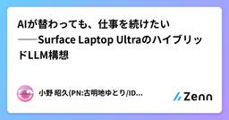
AIが替わっても、仕事を続けたい――Surface Laptop UltraのハイブリッドLLM構想 Zennの「大規模言語モデル」のフィード
AIに仕事を頼んで席を外す。翌朝、続きを頼む前に、まず昨日の記録を読み直す。どこまで進んだのか、何が終わっていないのか。AIに事情を説明するところから一日が始まる。 AIに仕事を任せたはずなのに、いつの間にか私がAIの進行管理をしている。 例えば、外部サービスへの登録を任せた直後、成功の応答が返る前に通信が切れたらどうだろう。翌朝、別のLLMに続きを頼んだとき、もう一度登録してよいのだろうか。 Surface Laptop Ultraを手に入れたら、一台のPCを自分の研究・開発の拠点にしたい。ローカルLLMとクラウドLLMを組み合わせ、人間が目的と重要な判断を担い、複数のAIが許された範...
7時間前
M5 ProでWhisper large-v3を99.5倍速に：whisper.cppの約8倍速いSwift＋Metal 4エンジン Zennの「AI」のフィード
Apple Silicon Mac で Whisper をローカル実行する Swift ライブラリ兼 CLI の MetalWhisperM5 を作りました。 Apple M5 Pro で ggml-large-v3-q5_0.bin（ビーム幅5）を動かしたところ、10分38秒（637.933秒）の英語音声を 6.409秒 で文字起こしできました。実時間の 99.531倍速 です。同じ音声・モデル・ビーム幅で whisper.cpp を走らせると whisper-cli が50.925秒、whisper-server が51.030秒かかるため、約8倍の差がついています。 外部の Swi...
8時間前
Codex・Claude Code・Antigravity で使えるモデル一覧と位置づけマップ（2026年11月時点） Zennの「AI」のフィード
AI コーディングツールとしてよく使われる Codex、Claude Code、Google Antigravity の3つについて、2026年11月時点で利用できるモデルを整理しました。 まずは3つのツールで使える主要モデルを、推論能力と想定消費トークン数（コスト・クォータの重さ）の2軸でマッピングした全体図です。 横軸：複雑な開発タスクでの想定消費トークン数（対数スケール） 公式に「1タスクあたりの消費トークン数」という単一の数値が公開されているわけではないため、以下の3つの要素を掛け合わせた相対的な重さ（クォータ・コスト消費量）を目安に配置しています。 出力 API 単価（ベースコ...
8時間前

緑で残った変異を、merge-baseで当て直して仕分ける Zennの「AI」のフィード
上限が5であることを守りたい処理でも、5件まで通ることしかテストしていなければ、上限を誤って6へ変えてもテストは通ります。6件目を拒むことまで確かめているかは、元のコードでテストが通っただけでは分かりません。 AIエージェントがPRを出す前に、こうした違いをテストが拾えるか、実装を1か所ずつ意図的に変えて確かめています。この変更を変異、変更後にテストが反応するか調べる方法を変異テストと呼びます。失敗を期待したテストが通れば、その変異は緑で残ります。 実物のデータを広く調べる担当を置くと、緑で残る変異が数十〜百数十件出ることがありました。あるPRでは、AIエージェントが緑の変異を1件ずつm...
9時間前

第30話 Case Fileテーマの配色と反映経路 Zennの「AI」のフィード
画像は AI 生成のイメージです Shelly はネイティブ側でターミナルを描画するアプリで、Case File の初期追加では、テーマを選んでも主要な画面の見た目が変わらない問題があった。 2026-09-16 の cbc4f6c88 では、主要な画面を制御する別系統のプリセットに Case File を追加し、独立した UI フォント選択も実装した。 対象となるのは、設定画面の選択と表示の反映先をどう照合するか、という開発上の問いである。 色の定義を増やすことと、その色を画面が読み取ることは、当時の Shelly では別の実装範囲だった。 さらに、切替時のブートフラッシュは実際の処理...
9時間前
Claude Code の設定をダイエットした話 — 常駐させるのは目次だけにする Zennの「AI」のフィード
Claude Code を毎日使っていると、設定は少しずつ育ちます。 「この作業ではこうしてほしい」「このプロジェクトではこの手順で」というお願いが増えるたびに、CLAUDE.md に 1 行、また 1 行と足していく。Skills も同じで、便利だと思った手順を書いておくと、あとから自分もエージェントも助かります。 気づいたら、自分の設定（claude-config というリポジトリで管理しています）は、だいぶ立派な体格になっていました。 問題は中身の正しさではなく、読み方でした。 ルールをまるごと常駐させたり、大きな Skill を一括で読み込んだりする形にしていたので、今回の作業に...
10時間前
Someone Opened Links From "Zero Data Retention" Prompts Days Later Zennの「AI」のフィード
Say you paste an error log into a coding agent. Somewhere in that log is a staging URL with a token in the query string. You don't worry about it, because you picked a provider with the "Zero Data Retention" label. The prompt gets processed and thrown away. That's the deal. On November 21, some O...
10時間前
Someone Opened Links From "Zero Data Retention" Prompts Days Later Zennの「大規模言語モデル」のフィード
Say you paste an error log into a coding agent. Somewhere in that log is a staging URL with a token in the query string. You don't worry about it, because you picked a provider with the "Zero Data Retention" label. The prompt gets processed and thrown away. That's the deal. On November 21, some O...
10時間前

AIエージェントの費用台帳では、「0円」と「未計測」を分ける Zennの「AI」のフィード
AIエージェントの費用画面にゼロが並んでいても、安く動いているとは限らない。リクエストは成功したが、単価が設定されていなかった。あるいは、別経路の呼び出しが台帳に届いていない。どちらも金額だけでは見落とす。 費用をタスク単位で管理するなら、足し算の前に、何を数えていて、何を取りこぼしているかを確かめる必要がある。 Kong AI Cost Managementは、AI Gatewayが報告したリクエストごとの費用を記録する。ただし、実行時にモデルの価格がなければ表示は$0になる。費用が省略された場合と、ゼロが報告された場合は同じように保存され、後から価格を設定しても過去の記録額は変わらな...
10時間前
AIエージェントの費用台帳では、「0円」と「未計測」を分ける Zennの「大規模言語モデル」のフィード
AIエージェントの費用画面にゼロが並んでいても、安く動いているとは限らない。リクエストは成功したが、単価が設定されていなかった。あるいは、別経路の呼び出しが台帳に届いていない。どちらも金額だけでは見落とす。 費用をタスク単位で管理するなら、足し算の前に、何を数えていて、何を取りこぼしているかを確かめる必要がある。 Kong AI Cost Managementは、AI Gatewayが報告したリクエストごとの費用を記録する。ただし、実行時にモデルの価格がなければ表示は$0になる。費用が省略された場合と、ゼロが報告された場合は同じように保存され、後から価格を設定しても過去の記録額は変わらな...
10時間前
「エージェントの権限」ではなく「実行の境界」で守る：AIエージェント時代のサンドボックス設計メモ Zennの「AI」のフィード
AIエージェントの安全性というと、プロンプトインジェクション対策や権限の最小化が語られがちです。もちろん大事ですが、もう一段下の層、実行の境界も同じくらい重要だと感じています。 このメモでは、その境界の置き方を整理し、最後に公式ドキュメントどおりの手順で Firecracker microVM のサンドボックスを起動するところまで書きます。 私は Sandscale の創業メンバーの Vakeesh です。利益相反があるので、先に書いておきます。 コーディングエージェントは、コードを書くだけでなく、人間がレビューする前に実行することがあります。ツール呼び出しも同様です。そのコードを、共有...
10時間前
「エージェントの権限」ではなく「実行の境界」で守る：AIエージェント時代のサンドボックス設計メモ Zennの「大規模言語モデル」のフィード
AIエージェントの安全性というと、プロンプトインジェクション対策や権限の最小化が語られがちです。もちろん大事ですが、もう一段下の層、実行の境界も同じくらい重要だと感じています。 このメモでは、その境界の置き方を整理し、最後に公式ドキュメントどおりの手順で Firecracker microVM のサンドボックスを起動するところまで書きます。 私は Sandscale の創業メンバーの Vakeesh です。利益相反があるので、先に書いておきます。 コーディングエージェントは、コードを書くだけでなく、人間がレビューする前に実行することがあります。ツール呼び出しも同様です。そのコードを、共有...
10時間前

【2026年】写真1枚で音声付きバイラルAI動画＆公開MCPサーバーを作った設計メモ Zennの「AI」のフィード
短いバイラル動画（Shorts / Reels / TikTok）を AI で生成する際、多くのユーザーがつまずくのは 「プロンプト設計の難しさ」 と 「映像と音声のズレ（リップシンク・効果音同期）」 です。 この課題を解決するため、写真1枚をアップロードするだけで、プロンプト不要・音声付きでショート動画を自動生成できるテンプレート型サービス Memeo AI と、外部エージェントからテンプレート検索や生成フローへ接続できる Memeo 公開 MCP サーバー を設計・公開しました。 本記事では、テンプレート抽象化の設計方針、音声同期パイプライン、MCP（Model Context Pr...
10時間前

【個人開発】AIと並行開発するカンバン拡張作った Zennの「AI」のフィード
個人開発してると、今どれをAIに任せててどれが自分の確認待ちかすぐわからなくなるので、VSCode向けの拡張機能として、ローカルのmdファイルで動くシンプルなカンバンボード作りました。真名は「カンバン・カンタン・カンターン」です。 1タスク=1mdにしてAIに直編集させ、人間はボードで動かします。inbox → todo → plan（AIの方針待ち） → doing（人間OKして作業中） → feedback（確認待ち） → done みたいにターンを回していきます。VSCodeの拡張機能なので、mdファイル自体は単純にエディタで記入しています。 特に新規性もなく、そういうツールはいく...
10時間前
AIが出した改善案を、ハーネスに入れる前に Zennの「AI」のフィード
開発が一区切りついたとき、次の仕事にも持ち越せそうな学びが四つ出てきました。全部をハーネスに書き足す前に、私はCodexのエンジニアリング役、イーロンさんに見てもらいました。それぞれ、次の仕事の何を変えられるのか。 決まったのは、既存の資料に検証例を一つ足すことでした。ここでいうハーネスは、AIと仕事をするときに使う判断基準や検証例、どの役が何を判断するかまで含めた仕組みです。 私はイーロン・マスクさんの仕事の進め方が好きで、ものを作るときによく参考にしています。なかでも、本人がエンジニアリングの原則として話している、この順番です。 要求を疑う いらない部品や工程を削る 残ったものを単純...
10時間前

AIエージェントはパソコンでは全然ダメなのに、スマホではすごく使える Zennの「大規模言語モデル」のフィード
パソコンを操作するAIエージェントは、自分の場合まともに使えたことがありませんでした。ところが同じモデルがスマホだと驚くほどうまく動きます。1か月毎日使っていて、今では細かい雑用はほぼすべて任せています。 「学会の経費を精算して」と頼むと、カレンダーから出張の予定を、メールから航空券とホテルの領収書を、Uberから移動の履歴を、カメラロールから食事のレシートの写真を見つけました。そのあと精算ポータルを開いてフォームを埋め、すべて添付し、2段階認証も済ませて提出しました。 実際のタスクには、たくさんのアプリに散らばった情報をまとめる必要があります。スマホにはその情報も、実行に必要なログイン...
10時間前

Claude Codeと作る競馬予測システム開発記(14) 評価の切り方編 Zennの「機械学習」のフィード
前回は、モデルの再学習パイプラインについて書きました。 第14回となる今回は、データを train / valid / test に分ける「評価の切り方」の失敗談です。第3回で少し触れた学習期間の短縮について、そこに至るまでの経緯を詳しく書きます。毎週きちんと再学習していたのに、学習データは新しくなっていなかった、という話です。 当初は、データを時系列に並べて、行数の80% / 10% / 10%で train / valid / test に分けていました。時系列順に分けているので、未来の情報が学習に混ざることはありません。一見、問題のない分け方です。 ところが、毎週の再学習を続けるう...
11時間前

AI市場のバブルははじけるのか——ビルダー／ソフトウェアエンジニアの視点から Zennの「生成 AI」のフィード
本稿は LinkedIn に掲載していた記事の内容の転載である。 元記事は こちら 本稿は、AI関連企業や特定の金融商品の売買を勧めるものではなく、将来の価格や市場動向を予言するものでもない。公開情報を材料に、生成AIを実装し、サービスとして届けるビルダー側・ソフトウェアエンジニア側に立つ一個人として、現在のAI市場を考察するものである。なお、報道された疑惑、会社が公表した事実、私の解釈は区別して記述する。 「AIバブルははじけるのか」という問いは分かりやすい。しかし、AIをひとつの銘柄や市場として扱うと、重要な違いを取り落とす。基盤モデルの研究開発、GPUやメモリー、ネットワーク機器、...
11時間前

ローカル LLM の Bonsai に canvas アニメの「重なりのまちがい」を探させてみた (と、描く命令を数える道具) Zennの「大規模言語モデル」のフィード
canvas で 2D のアニメを描いていると、入れ物と中身の重なりの順をまちがえることがあります。なべの奥のふちの線が具の上に出てしまう、具がなべの手前のかべを突きぬけて見える、といったまちがいです。 スマホの大きさではほとんど見えないので、目で見るチェックでは見のがしがちです。でも、全部のコマを拡大して見るのは大変です。そこで、次の 2 つを試しました。 画像も読めるローカル LLM の Bonsai (Ternary Bonsai 2.5 27B と画像用の mmproj) に、コマの絵を見せて聞く 絵を見ないで、canvas に描く命令を記録して数える道具を作る 2026 年 1...
11時間前
AIに「字数を埋めろ」と指示したら、事実を捏造した Zennの「大規模言語モデル」のフィード
店舗の告知原稿を1本入れると、WordPress・X・Instagram・Googleビジネスプロフィールの4媒体向けの文章をまとめて生成するツールを作りました。 動くものはここにあります。 このツールで一番時間をかけたのは、生成そのものではありません。生成した後に、機械で検査する処理です。なぜそこに時間をかけたのかという話を書きます。 最初のプロンプトには、媒体ごとの目安字数を入れていました。WordPressは600字程度、Instagramは300字程度、というような指定です。短すぎる出力が返ってくるのが嫌だったので、「指定の字数に届くまで書くこと」という趣旨の指示も添えました。 ...
12時間前
声から年齢は推定できるか ― Common Voice 日本語版で年代分類を試した結果 機械学習タグが付けられた新着記事 - Qiita
本記事は、AI エージェント「Muse」と筆者が共同で実施した実験の報告です。データ処理・学習・評価の実行は Muse が担い、実験設計の判断と本記事の内容確認は筆者が行いました。まとめ声から年齢（年代）がどこまで推定できるかを、Common Voice 2...
12時間前

スキルを自動で直す手法 ── SkillOpt・SkillAdam・SSO・SkillReducer・GEPA と、それを疑う BiPA Zennの「大規模言語モデル」のフィード
スキル（SKILL.md）を自動で直す手法は、2026 年に入って一気に増えました。どれも「実行して、失敗を見て、直す」と説明されますが、1 回の改善で具体的に何をしているかは手法ごとにかなり違います。その違いが、どの場面に向くかを決めています。 本稿では、論文の本文と公開されているソースを読み、各手法を次の観点で分解しました。 何が要るか（正解、採点関数、実行記録） 1 回の改善で何をするか 直した案をどう採用するか どれくらい費用がかかるか 何が報告されているか どう使うか 弱点 数字はそれぞれの論文の設定での値です。論文はどれも提案者自身が書いたもので、比較相手も提案者が動かしてい...
12時間前

TokenEconomizer を入れて測ったら、最初は「効いていない状態」を測っていた
Zennの「大規模言語モデル」のフィード
こんにちは、Mochiです。 AIエージェントのトークン費用を抑えるプラグイン「TokenEconomizer」を、Claude Code に入れて実測しました。同じタスクを繰り返し実行し、導入前と導入後でトークン量と費用を比べた記録です。 結論を先に書きます。 仕組みを効かせた状態では、導入前と比べてトークンが約35%、費用が約38%少なくなりました（6回の平均） ただし、最初に測った「導入後」は、プラグインの仕組みがどれも効いていない状態でした。その状態でも約13%減っていたので、減った分を全部プラグインの効果とは言えません 学習（micro-skills）の効果は、この測定のやり方...
13時間前

ColabでセルフホストLLM：StrataとローカルのpiをSSHトンネルでつなぐ Zennの「大規模言語モデル」のフィード
Google AI Studio のブラックフライデーで Pro を年間契約したところ、Colab のコンピュートユニットが毎月 200 CU 付いてきました。せっかくある枠なので放置して消えるのはもったいない。それと、前々から気になっていた推論エンジンの Strata（Strata Terminal）を一度ちゃんと触ってみたかった、というのが今回のきっかけです。 手元のマシンに 24GB 級の GPU は積んでいません。かといって、普段いじっているリポジトリを Colab のノートブック側へ丸ごと上げて作業するのは同期が面倒ですし、できればコードベースはローカルに置いたままにしたいとこ...
13時間前
Murmurations of Elliptic Curves──数学者たちが「ムクドリの群れ」と名づけた有限体上の楕円曲線の解の個数の揺らぎ 機械学習タグが付けられた新着記事 - Qiita
素数 $p$ で割った余りだけで計算する世界で、方程式を解き、解の個数を数える。そんな数学の世界があることを、聞いたことはありますか？その世界は、実在します。そこでは、規則なく並んでいるように見える素数と、方程式の解の個数との間に、夕暮れの空でムクドリの群れがうねるよ...
13時間前
【小学5年生でもわかる】ノイズ除去（デノイジング）ってなに？ DeepLearningタグが付けられた新着記事 - Qiita
ノイズ除去をわかりやすく解説ざらざらしたノイズが入った画像を、きれいに復元する技術です。より詳しい技術解説は技術版の記事をご覧ください。おすすめの学習リソースG検定対策の学習に役立つリソースを紹介します。書籍『深層学習教科書 ディープラーニング...
13時間前

llama-quantizeで狙ったサイズのモデルを作成 Zennの「大規模言語モデル」のフィード
llama.cpp v1.1.0の量子化ツールllama-quantizeに、サイズで最適化する--target-sizeとbpw（ウェイトあたりのビット長）で最適化する--target-bpwという新しい機能が追加されました。VRAMサイズや精度と相談しつつ、自分の目的にあったサイズのモデルに量子化できる、なかなか便利な新機能です。それをさっそく試してみました。 llama-quantizeは、次のような感じで量子化タイプを指定していました。 ご存知の通り、Q4_K_Mなど多くの量子化タイプは、モデル内部の埋め込み層や出力層、アテンション層などに異なる型が使われます。モデルのうちAtt...
13時間前
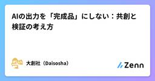
AIの出力を「完成品」にしない：共創と検証の考え方 Zennの「生成 AI」のフィード
AIに質問すれば、短時間で整った文章が返ってきます。しかし、その文章が整っていることと、自分の考えとして使えることは同じではありません。 大創社が2026年11月27日に公開したnoteでは、AIを「魔法の杖」ではなく「鏡」と捉えています。AIに答えを丸投げするのではなく、まず自分が何を知りたいのかを言葉にし、その対話を通じて考えを深めるという視点です。 本記事では、この公開済みの考え方をもとに、AIとの共創における「検証」を、単なる正誤確認ではなく、意図と文脈を取り戻す作業として整理します。 公開記事には、AIが作った企画書は整っていたのに、実際に説明しようとすると自分の言葉になってい...
14時間前

LLM APIの入力トークン、43%が「同じ文章の再送」だった — 実測して月額を54%削った話 Zennの「大規模言語モデル」のフィード
毎月の請求は「まあこんなものか」で見送っていました サブスクもバーコード決済も、現金が手から出ていかないので減った感覚が残りません API の請求も同じで、桁が小さいうちは痛みがないまま使い続けていました 重い腰が上がったのは「で、1日いくらかかってるの?」に答えられなかったときです 口頭で見積もってみたら月¥2,184 ところが実データで数え直すと実額は月¥1,411で、見積もりのほうが2箇所間違っていました (課金ゼロの機能を数えていた・モデルを取り違えていた) 金額そのものより、自分が課金の中身を把握していなかったことのほうが効きました 個人運用しているニュース自動収集パイプライン...
14時間前
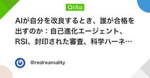
AIが自分を改良するとき、誰が合格を出すのか：自己進化エージェント、RSI、封印された審査、科学ハーネスをめぐる10本 機械学習タグが付けられた新着記事 - Qiita
「自己進化」という言葉は、いまやほとんどのエージェント論文に付けられるラベルになりました。「再帰的自己改善（RSI）」も、モデルが自分の回答を書き直す話から、研究所が自前の学習カーネルを速くする話まで、何にでも使われています。ここに集めた記事は、ひとつの見方を共有していま...
15時間前

Soft Promptのスキルは、なぜ足し算できないのか Zennの「大規模言語モデル」のフィード
「スキルAの正答率が高い。スキルBも高い。ならばAとBを続けて実行できるはず」。モジュール化されたLLMを設計するとき、この推論を無意識に置いてしまいがちだ。 11月25日に公開された When Skills Fail to Compose は、この仮定を正面から試した研究だ。[1] 凍結した言語モデルに、異なる操作を実行するSoft Promptを別々に学習させ、その組み合わせ、置き換え、修復を測る。論文の主題はLoRAの重みマージではない。それでも複数アダプタを運用する人にとって、評価項目の設計がかなり参考になる。 Soft Promptは、学習可能な連続ベクトル列を入力側に付け加え...
16時間前

書き込み時 LLM 呼び出しゼロ・常駐約 75 MB の Rust メモリエンジンで 5 大長期記憶ベンチマーク計 10,957 問を実測・ Zennの「大規模言語モデル」のフィード
AI エージェントに数百万〜1,000 万トークン規模の長期記憶を持たせようとすると、実務では大きく 3 つの壁に突き当たります。書き込みのたびに LLM 要約や埋め込み計算が走ってコストが膨らむこと、ベクトル検索のメモリフットプリントが数 GB 単位に膨れ上がること、そして仕様変更や方針撤回が起きた際に古い記録と新しい記録が混在して根拠を追えなくなることです。 私たちは、この課題に対して「書き込み時の非破壊・決定論的永続化」と「検索時のマルチパス抽出」を明確に分離した単一バイナリの Rust エンジン（LongMemOS / mb-server）を設計しました。書き込み時に LLM 呼...
17時間前

公式ツールでQwen2-VLを書き出したら、ネット上に存在しないエラーで死んだ話：行き止まり4つと検索不能のエラー1つ Zennの「機械学習」のフィード
手順書どおりにやりました。ベンダー公式のツールキット、公式のガイド、ツールキットが「対応」とうたうモデル。ビルドステップ371件が全部緑で流れていって——最後に、丁寧に死にました。エラーメッセージは、公開インターネット的には「誰にも起きたことがない」ものでした。 エラー全文がこれです。 検索してみてください。私も認めたくないくらい何度も検索しました。結果ゼロ。フォーラムにも、GitHub issueにも、読める言語のブログにもない。あるのは私とターミナルと、この世でここにしか存在しない文字列だけ。 まず疑うのはここですよね。インストール不良、環境の相性、どこか半壊れ。 なので、わざと条件...
17時間前
公式ツールでQwen2-VLを書き出したら、ネット上に存在しないエラーで死んだ話：行き止まり4つと検索不能のエラー1つ Zennの「大規模言語モデル」のフィード
手順書どおりにやりました。ベンダー公式のツールキット、公式のガイド、ツールキットが「対応」とうたうモデル。ビルドステップ371件が全部緑で流れていって——最後に、丁寧に死にました。エラーメッセージは、公開インターネット的には「誰にも起きたことがない」ものでした。 エラー全文がこれです。 検索してみてください。私も認めたくないくらい何度も検索しました。結果ゼロ。フォーラムにも、GitHub issueにも、読める言語のブログにもない。あるのは私とターミナルと、この世でここにしか存在しない文字列だけ。 まず疑うのはここですよね。インストール不良、環境の相性、どこか半壊れ。 なので、わざと条件...
17時間前
会議の議事録をAIに任せる方法｜文字起こしから決定事項と宿題を抜き出すプロンプト2つ Zennの「生成 AI」のフィード
みなさん、こんにちは。 日本在住31年のシェパードです。 今日は、会議のあとの議事録づくりを、AIにだいたい任せてしまうレシピを書いていきたいと思います。 会議そのものより、終わったあとの議事録づくりが地味にしんどい。私はそう思っています。 録音を聞き直して、誰が何を言ったか思い出して、「あれ、結局どう決まったんだっけ」と考えて……。30分の会議の議事録に、もう30分かかる。あれは本当に時間の無駄だと思います。 その作業、AIがかなり得意です。 ただし、丸投げすると危ないところもあります。この記事では「任せていい部分」と「自分で確認すべき部分」を分けて書きます。 会議の文字起こしテキスト...
17時間前
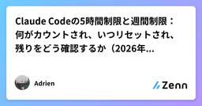
Claude Codeの5時間制限と週間制限：何がカウントされ、いつリセットされ、残りをどう確認するか（2026年11月版） Zennの「生成 AI」のフィード
Claude Code の使用制限は、5時間ごとにリセットされるセッション制限と、アカウントごとに決まった日時に毎週リセットされる週間制限の2本立てです（プランによってはモデル別の週間制限も加わります）。claude.ai、デスクトップ、スマホ、IDE での利用もすべて同じ枠から引かれます。残りは Claude Code の /usage、または claude.ai の「設定 > 使用量」で確認でき、ステータスラインに常時表示することもできます。 この記事では、Pro / Max / Ultra のサブスクリプションで Claude Code を使う人向けに、 何がカウントされるのか い...
17時間前

コードが書けない人間が、生成AIでデスクトップ環境を作っている Zennの「生成 AI」のフィード
私はコードが書けません。それでも今、ブラウザの中で動く小さなデスクトップ環境「sono Desktop」を作っています。コードはすべて生成AIが書いています。 この記事では、今の sono Desktop で何ができるのか、どう作っているのか、作る途中で何につまずいたのかを書きます。コードが書けない人間がAIに任せると、どこまでできて、どこで詰まるのか。その記録です。 ふだんはマンション管理士と配達の仕事をしています。また一人でWEB制作などをする会社を起ち上げました。sono は、私の会社（合同会社アルミ）の事業の一つにならないかな、くらいの気持ちで、AI と一緒に進めています。 ブラ...
18時間前
目の前の仕事から、次の担当者に知識を残す｜小さく始めるAI-Readyなデータ基盤作り④ Zennの「生成 AI」のフィード
第1部では、私が見てきた生産技術の現場で、前の案件で得られた知見が次の設計に届かず、似た不具合が繰り返されることを書きました。そこで着目したのが、最初の記録を作る段階から、人とAIが再利用できる形に整えることです。第1部 第2部では、家事・育児の原文をAIと整理し、対話で確認した作業の順序や引き継ぎの条件を正本に反映しました。同じ正本からフロー図、ガントチャート、2レーン図を作り、記録を再利用できることを確かめました。第2部 第3部では、外観検査で部品図に印を付けたときに、製品、不良内容、座標をJSONに残すデモを作りました。実務では図のIDと版、検査面、工程も記録し、次の担当者がどの図...
18時間前

AIエージェントの原型は3本の論文にあった：ReAct、SWE-bench、SWE-agentを読み解く Zennの「大規模言語モデル」のフィード
Claude Code や Codex のようなコーディングエージェントを使っていると、不思議な既視感があります。 ファイルを探し、関係ありそうな箇所を読み、編集し、テストを回して、失敗したらログを見て直す。まるで人間の開発者の手順をなぞるような動きです。しかも、その合間に「次はこれを確認する」「このエラーは想定と違う」といった短い思考が挟まります。 この動きは、誰かが思いつきで決めたものではありません。2022年から2024年にかけて発表された3本の論文で、部品が1つずつ発明され、検証されてきた結果です。 ・2022年 ReAct 思考と行動を交互に回す「ループ」の発明 ・2023年 ...
18時間前

【Stable Diffusion】写真から顔を似せたら、決め手は「輪かく」と「見た目を読む1枚」だった（GTX 1660） Zennの「機械学習」のフィード
私はエンジニアではありません。AI（Claude）と一緒に、手元のパソコンだけで動く絵づくりを試しています。 自分の写真を何枚か渡して、自分に似た絵を作りたいと思いました。 やってみると、「似せる部品」を入れただけでは、ほとんど似ませんでした。部品を変え、重ね方を変え、写真の数を変えて、何が効いたかを1つずつ確かめました。この記事は、その記録です。 先に結果を書きます。 顔の「雰囲気」を写す部品（IP-Adapter Plus Face）では、強さを最大にしても似なかった。 「その人を見分ける数字」を使う部品（IP-Adapter FaceID）にすると、輪かくから似た。似ている・似てい...
1日前

なぜ、Rustは未来永劫普及しないと言えるのか？ 3 Zennの「生成 AI」のフィード
筆者は2026年3月5日に、以下の記事を公開しました。 この記事では、従来は人間にとって負担であったRustの厳格な型システムや所有権システムが、AIにとっては実装の正しさを検証するための有効な仕組みとして機能することに着目しました。AIによってRustの実装難易度という弱点が緩和され、安全性という長所が残ることで、基幹領域での採用が連鎖し、Rustが覇権言語になる可能性を論じたものです。当時の筆者は、組み込みソフトウェアからWebアプリケーションまでRustで統一される未来にも期待していました。 現在でも、この技術的なメカニズム自体は成立すると考えています。しかし、考察を進めると、むし...
1日前

AI動画の「カットごとに顔が変わる・尺が合わない・文字が潰れる」を解決する『音声先行クロック＋IDロック』演出術 Zennの「生成 AI」のフィード
Sora 2、Veo 3.1、Seedance、Kling、Wan 2.7——今の動画生成AIを使えば、誰でも「5秒間の美しいワンカット」なら簡単に作れるようになりました。 しかし、いざ**「60秒〜90秒のショートアニメ」「ナレーション付きの解説動画」「実在する商品の動画広告」**のように、10〜15カットを連続で繋ごうとした瞬間、多くのクリエイターや開発者が同じ壁にぶつかります。 カットごとにキャラの顔や服装が微妙に変わる（顔ブレ・衣装ドリフト） ナレーションの尺と映像の尺が合わず、不自然なスロー再生や静止画フリーズでごまかすことになる 日本語のテロップ、商品のパッケージロゴ、価格表...
1日前
11/27 (金)

検閲解除ツールhereticの「KL 0.0000」は劣化ゼロではなかった: Qwen3の<think>が指標を素通りさせていた Zennの「機械学習」のフィード
hereticは、追加学習なしで既存のLLMの拒否応答(安全アラインメント)を抑制するPython製CLIツールである(AGPL-3.0-or-later)。 方向性アブレーション(abliteration)という解釈可能性研究の手法に、OptunaのTPE探索を組み合わせ、「拒否率」と「KLダイバージェンス(元モデルからのズレ)」を同時に小さくするパラメータを自動で探す。 筆者はDay 036の記事でもhereticを試し、upstream既定(Qwen3-4B-Instruct-2507、100 trial)で「拒否を0にすること」と「元モデルからのズレを小さくすること」が強いトレー...
1日前
Kling 4.0 vs Kling 4.0 Flash 徹底比較：10キーフレーム軌道制御・30秒生成上限・2段階クレジット51.4%削減 DeepLearningタグが付けられた新着記事 - Qiita
Lukas Vogel · Applied Research Editor · 公開日 2026-11-27TLDR フルティアのKling 4.0（最長30秒1080p/4K・最大10キーフレーム軌道補間・15アセットOmni Reference）と高速ドラフト向けK...
1日前
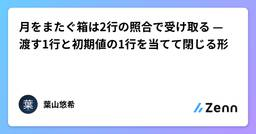
月をまたぐ箱は2行の照合で受け取る — 渡す1行と初期値の1行を当てて閉じる形 Zennの「生成 AI」のフィード
済み表の残りを受け渡しの1行で月頭へ渡した形は前回です。渡した1行には、壁返しの箱と繰り越し残りの2つの数が並んでいます。行き先も2つに決まっています（繰り越し残りは初期値の写しに届き、壁返しの箱は点検の対象になります）。ただし渡す側の行と初期値の行は、先月末と本日月頭と別々の日に別々の紙へ出るため、残りが確かに渡ったかは2行を並べて照らすまで分かりません。今回は、渡す1行と初期値の1行の組を1読みで照らし、月をまたぐ箱の行き先を2行の照合で閉じる形を定めます。 1行に載るのは、月末に済み表へ残った箱の数です。行き先は次の2列です。 決まりは1つにします。 行き先の確認は、渡す1行と初期...
1日前
決定木：詳細な技術解説 DeepLearningタグが付けられた新着記事 - Qiita
この記事は「技術版」です。初心者向けの説明は別記事をご覧ください。決定木の技術的解説特徴空間を再帰的に分割。分類はジニ不純度、情報利得で分割を決定。回帰は分散削減を基準。ID3、C4.5、CARTアルゴリズムが存在。過学習防止に前剪定・後剪定が必要。ランダムフ...
1日前
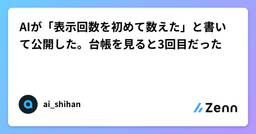
AIが「表示回数を初めて数えた」と書いて公開した。台帳を見ると3回目だった Zennの「生成 AI」のフィード
X の投稿は、AI の席（広報部）に任せています。広報部は3日おきに振り返りをして、どの型の投稿がよく見られたかを確かめます。 11月27日の朝、広報部は X の投稿6本の表示回数を公開ページから読み、振り返りに書きました。続けて note の記事と、その告知の X の投稿も出しています。どれにも「初めて数えた」と書いています。 誤りに気づいたのは同じ日の夜。次の記事のために、過去の記事の題を並べたところでした。11月8日に「AIに任せたXの投稿9本の表示数を、手で読んで並べた」という記事を、同じ広報部が出していました。 投稿の台帳（metrics.json の xPosts）と、振り返...
1日前
Claude Duet を組織に入れるとき、管理画面が握るのは 1 つの有効化トグルだけ Zennの「生成 AI」のフィード
この稿が答えるのは、日本の組織が今週抱えそうな質問です。「先回りで動くエージェントを Team プランで組織に入れるとき、管理者はどこまで縛れるのか」。答えは 2 つです。入れることはできる。ただし管理画面が握るのは 1 つの有効化トグルだけなので、残りは指示や運用で埋めなければなりません。 根拠は fukuda 氏の実測記事です（Zenn で 2026 年 11 月 14 日公開、以下「Duet 記事」）。氏の組織は 11 月 13 日の午前中に管理画面に Duet が出てきた瞬間から検証を始め、夕方にまで運用を組みました。本篇は、その 11 月 13 日時点の観察を、社内規則に落とす...
1日前

介護のお正月の食事と行事、AIはどこまで任せられますか？ — 膳の1品で決める Zennの「生成 AI」のフィード
昨日は、年末年始の帰省と外泊の段取りの仕事で、介護の現場に寄せて読む33回目を書いた。本稿はその34回目で、昨日予告した通り、同じ介護の現場にお正月の食事と行事の段取りの仕事を置く。帰省と外泊の段取りの仕事は33回目に置いた。本稿で置くのは、その玄関の席から厨房の仕込みと食堂の膳と催し物の打ち合わせの席に移る、12月の下旬から1月の上旬に回る仕事だ。正月の献立の下書き、利用者ごとの食形態と食べられない物との突合の一覧、食材の発注と納期と賞味期限の一覧、催し物の企画案と日程表、食堂の席と車椅子の並びの一覧、家族向けの正月の告知文の下書き、行事の記録のひな形は機械が速くそろえられる。しかしお...
1日前
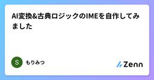
AI変換&古典ロジックのIMEを自作してみました Zennの「生成 AI」のフィード
GPTがこれだけ日本語が得意なら、その力をIMEにも応用して、日本語入力をもっと楽にしてほしい。 このAIコーディング全盛の時代、エンジニアの私も、AIに指示を出すために日本語を頻繁に打つようになりました。使う機会が増えたからこそ、自分が納得できるIMEを使いたい。これが、Windows向け日本語IME coltIme を作り始めた動機です。 たとえば、海産物の話をしているときの「かき」と、果物の話をしているときの「かき」。読みだけでは同じでも、話の流れを見れば候補を選べそうです。確定した文章や周辺のコンテキストを読んで、「この続きなら、打ちたいのはこれかな」と提案してくれる。そんなIM...
1日前

クラシックRAG・GraphRAG・Agentic RAGを同じ質問で比べた結果 Zennの「生成 AI」のフィード
クラシックRAG、GraphRAG、Agentic RAG。3つを同じデータ・同じ質問で実際に動かして比べたところ、優劣の順番はありませんでした。質問の種類によって、向いている方式が入れ替わります。 この記事では、その結果を1つの表にまとめ、「どんな質問に、どの方式を使うか」を整理します。 質問は、性質の違う3つです。 質問1：有給休暇の繰越ルールは？（答えが1か所にある） 質問2：サプライヤーX社で火災が起きました。当社のどの部署に影響しますか？（つながりをたどる） 質問3：新製品Zの売上は、いつから、どれくらい落ちましたか？ 原因とあわせて教えてください。（数字と原因を聞く） 数字は...
1日前

Excelの賞与の明細でAIに任せるのは差引の式まで — 率と上限は人間の帳が持つ Zennの「生成 AI」のフィード
12月の前置きの続きを一つ進めます。前回の総勘の残の点検では、帳を給与の側から総勘定元帳の側へ動かして、残の計算が合わない行と、残が立つ向きが反対になった行を先に印として拾う段を扱いました。今回は票の側に戻ります。冬の賞与の支給は12月に入って動き始め、支給の案の確定、控除の引き当て、差引の閉じ、振込データの作成が短い日数の中で並びます。この回では、支給の案が確定した後、振込データを作る前に、控除を引き当てて差引の行を1列で閉じる段を扱います。食品メーカーの12月は、本締めの準備と賞与の支給が同じ週に重なる時期で、票が単発で上書きされがちな位置に置かれます。支給の行が確定していても、控除...
1日前

AIのレバレッジはカスタマーフロントから設計する 1 Zennの「生成 AI」のフィード
最近、大企業の CIO や CTO、CAIO の方々と話す中で、AI をどう事業の成果につなげるかという話になりました。「こういう話が聞きたい」と言われたこともあり、これまでこのブログで書いてきたことを顧客価値の側から整理してみます。 AI を導入して製品開発の速度が2倍になったり、質問への回答を作る時間が半分になったとします。その改善はお客様にどこまで届いているでしょうか。 担当者の作業が速くなることには価値があります。ただ、その先で承認待ちが続いたり誤った案内で問い合わせが増えたりすればお客様に届く価値は変わります。 AI は組織の仕事の進め方を増幅します。うまく設計された仕事には正...
1日前

Agentic CX Designer のアプリケーションを SDK でコード管理してみた 1 Zennの「生成 AI」のフィード
Amazon Connect の Agentic CX Designer (以下 ACXD) では、AI エージェントとの会話の流れを、ワークスペースの画面でノードをつないで組み立てられます。試しに作ってみるなら画面が手軽ですが、本番で使うアプリケーションになると、同じ手順で何度もデプロイしたり、変更のたびに動作を確かめたりする作業が増えていきます。私も画面でいくつか作ってみたところ、どこをいつ変えたのかを後から追うのが大変そうだなと感じました。 ACXD の SDK のドキュメント にも、会話型の AI をプロトタイプから本番へ展開していくと、繰り返し実行できるデプロイやプログラムから...
1日前
AIのAPI代とVPS代を円・税込で試算する静的ツールを作った：料金データの持ち方と計算の決めごと Zennの「生成 AI」のフィード
AIのボットやエージェントを自分のVPSで動かすときに、API代とサーバー代を合わせて月いくらになるかを出す試算ツールを作りました。 AIサーバー代チェック（無料の試算ツール） これまでの診断ツールと同じく、サーバーを持たない1ページの静的サイトで、Cloudflare Pagesに置いています。 この記事では、料金データの持ち方と計算の決めごとを中心に書きます。 入力は5つです。 1日に呼び出す回数 1回あたりの入力トークン数と出力トークン数 モデル（Anthropic・OpenAI・Googleの10モデル） サーバーのメモリ（2GB・4GB・8GB） 為替（初期値は1ドル160円）...
1日前

類似事例の並べ替えを OpenAI Decisions API に任せてみた：店舗・事務所の賃料査定での実験 Zennの「機械学習」のフィード
スマサテ株式会社のAIエンジニアのkoyanoです。 弊社は賃料査定システムを開発しており、私はその査定ロジックの改善などを担当しています。最近は、住居だけでなく店舗・事務所の賃料査定のロジックを作成していました。 店舗・事務所の査定では、周辺で募集されている「似ている事例」を選び、その賃料から査定額を出します。この「似ている」を、今は手作りの類似スコアで数値化して並べています。 ただ、実際の物件を見比べると「この2つは数字の上では近いけど、通りの雰囲気が全然違う」といったことがよくあります。スコアにしにくい情報も含めて、もっと実感に合った並べ替えはできないか、というのがこの記事の出発点...
1日前

Claude Code のサブエージェントを13本並べたら、上限（429）で全部止まった — 完了済みは残し、未完了だけやり直す回し方 Zennの「生成 AI」のフィード
この記事は Qiita と note にも同じ内容を載せています。Qiita: ／ note: Claude Code で資格試験の問題集を作るとき、作問や校閲をサブエージェント（下請けの AI）に分けて、並列で回しています。 前の記事に、こういう質問をもらいました。 429 で止まった後、完了済みの作問や校閲を飛ばして、未完了の分だけ再開できますか？ 答えは「ジョブ単位でなら、できる」です。実際に上限で止まったのは3回ありました。そのとき何が残って、何をやり直したかを書きます。 1つのジョブは、40〜50問を1ファイルに書く（または、そのファイルを校閲する）大きさにしています。 ジョブ...
1日前
Whisperの注意ヘッドを1個だけいじって、日本語の聞き取りが崩れないか120文で確かめてみた Zennの「機械学習」のフィード
音声認識モデルのWhisperには、音声にない文章を出力してしまう癖があります。無音や雑音の区間に、それらしい一文が出てくる現象です。 これを追加学習なしで、重みを少し書き換えるだけで抑えられないか。手元でそんな実験をしていて、その途中で日本語の聞き取りへの影響を確かめました。この記事はその検証記録です。 先に結論を書いておきます。 Whisper smallのデコーダで、注意ヘッドを1個だけ弱める編集を3通り試した 日本語の合成音声120文で比べたところ、どの編集も編集なしより良くならなかった ただし差はごく小さく、誤りが増えた分の大半は1つの文から出ていた 効果は出ませんでしたが、重...
1日前

人が判断する場所まで決めてあるソフトウェアファクトリー。Kiro Factory Manual を読んで動かす Zennの「生成 AI」のフィード
こんにちは、AWS Japan でソリューションアーキテクトをしているいなりくです。 エージェントにプルリクエストを書かせるようになってから、レビューのほうが追いつかなくなった経験はないでしょうか。PR は大きくなり、届く間隔も短くなり、気づくと 1 日の大半を「エージェントに指示して、出てきたものを確かめる」ことに使っています。 Kiro のエージェントを作っているチームも、同じ壁にぶつかりました。その対策として、人の注意をどこにどう使うかを軸にしたソフトウェアファクトリーを作り、2026 年 11 月 25 日の Kiro ブログで紹介しています。このファクトリーは、タスクボードの項...
1日前

線画着色の評価を「毎回同じヒント」で: pip install hintauc ではじめる Hint-AUC Zennの「機械学習」のフィード
線画着色（line art colorization）の論文を読んでいると、「ユーザーが置いた色ヒント」をランダムに作って評価している例がよくあります。ランダムなので、同じモデルでも実行するたびにスコアが変わります。 そこで、イラストの領域からヒントを決定的に作る（DHT） ことと、ヒントの量を 0 % から 100 % まで変えたときのスコアを曲線の面積でまとめる（Hint-AUC） ことを提案しました。IEEE TVCG 2026 に採録された論文です。評価用のライブラリを pip で入れられるようにしたので、使い方を簡単に紹介します。 上: 決定的に作ったスクリブルのヒント（ヒント...
2日前
線画着色の評価を「毎回同じヒント」で: pip install hintauc ではじめる Hint-AUC Zennの「ディープラーニング」のフィード
線画着色（line art colorization）の論文を読んでいると、「ユーザーが置いた色ヒント」をランダムに作って評価している例がよくあります。ランダムなので、同じモデルでも実行するたびにスコアが変わります。 そこで、イラストの領域からヒントを決定的に作る（DHT） ことと、ヒントの量を 0 % から 100 % まで変えたときのスコアを曲線の面積でまとめる（Hint-AUC） ことを提案しました。IEEE TVCG 2026 に採録された論文です。評価用のライブラリを pip で入れられるようにしたので、使い方を簡単に紹介します。 上: 決定的に作ったスクリブルのヒント（ヒント...
2日前

評価基準と現場の慣習が食い違うとき、注記を足すとLLM判定器はどう変わるか ― 999件と未見の300件で確かめた Zennの「機械学習」のフィード
LLMに会話の品質を採点させるとき、評価基準の字面と現場の慣習が食い違うことがあります。たとえば「名前を呼ぶならファーストネームで」という基準は、日本で正しいとされる「名字＋様」とぶつかります。 このような食い違いがある箇所に、評価基準を変えずに「地域慣習の注記」を3行だけ足しました。その結果をClaudeの4モデル（Haiku 5.5・Sonnet 5.5・Opus 5.5・Fable 5.2）で測っています。 食い違いは、注記でほぼ解消できた。 名字＋様の減点率は、注記を書くときに見たデータ（999件）で 93〜100% → 0〜2%、注記を書いた後に用意した別のデータ（300件）で...
2日前

AIリスク監査の実施、わずか5.7％ 内部監査が追い付かない「もう一つのリスク」とは？ 1ITmedia AI＋ 最新記事一覧
ある調査によると、今後重要性が高まるリスクとして「AI・生成AI」を挙げた回答は半数を超えた。一方、AIのリスクに関する内部監査を「すでに実施」を選んだ回答者は5.7％にとどまる。同調査からは、内部監査が追い切れていない、AI以外の領域も浮かび上がった。
2日前

【フィジカルAI解説】Egocentricとは？エゴセントリックデータの集め方について解説 Zennの「機械学習」のフィード
フィジカルAIの研究開発で使う学習データは、「フィジカルAIデータピラミッド」として整理できます。土台となるのは、3D仮想環境で物体の位置や作業条件を変えて生成するシミュレーションデータ（合成データ）です。その上に、人が実際に作業する様子を記録した一人称視点データ、人が小型グリッパーを手に持って物のつかみ方や動かし方を実演したUMIデータ、そして人がロボットを遠隔操作して収集した実機のテレオペレーションデータが続きます。 本記事では、その中でも人の作業を一人称視点で捉えるエゴセントリックデータに着目し、モデル学習での役割と、収集を始める前に整理しておきたいポイントを解説します。 Egoc...
2日前

DIY AutoML 開発メモ (2) TensorFlow・PyTorch・AutoGluon・H2Oで結果を照合する Zennの「機械学習」のフィード
前回は、CSVの点検から分類モデルを選び、取り置いたデータで最後に評価するところまでを紹介しました。今回は、その結果を別のライブラリでも確かめてみます。題材はIrisとWineです。 TensorFlowとPyTorchには、同じ構成のニューラルネットワークを渡して、予測ラベルと確率を比べました。AutoGluonでは、選んだモデルをDIY AutoMLと同じ保留テスト行・評価指標で照合しました。H2O AutoMLでの照合は追加検証として掲載します。 WindowsのCPUとPython 3.13.17で、TensorFlow 2.20.0とPyTorch 2.14.0のCPU版を使い...
2日前

電通が「Geminiを使いこなすFDE」ら3000人育成プログラムを開始 その内容とは？ 1ITmedia AI＋ 最新記事一覧
生成AIを導入しても、現場の業務に生かせないと成果にはつながらない。電通は約3000人を対象に、「Gemini Enterprise」を使いこなし、現場での生成AI活用を推進できる人材の育成を始めた。人材をどう育てるのか。
2日前

ML基盤から深層学習まで固める技術書5選 Zennの「機械学習」のフィード
去年の秋頃、LLMを使ったプロダクト開発に本格的に関わるようになった。プロンプトエンジニアリングやRAGの実装はなんとかこなせるものの、モデルの挙動が想定外になったとき「なぜそうなるのか」を説明できない自分に気づいた。APIの向こう側がブラックボックスのままだと、トラブルシュートで手が止まる。 そこで基礎を固め直そうと技術書を何冊か読み始めたが、途中で挫折する本が続いた。分厚い教科書を1ページ目から律儀に読む方法がそもそも自分に合っていない。結局、必要な箇所を絞り込み、手を動かしながら読む形に切り替えてから、ようやく知識が定着し始めた。 この記事では、自分がML・ディープラーニングの基盤...
2日前
ML基盤から深層学習まで固める技術書5選 Zennの「ディープラーニング」のフィード
去年の秋頃、LLMを使ったプロダクト開発に本格的に関わるようになった。プロンプトエンジニアリングやRAGの実装はなんとかこなせるものの、モデルの挙動が想定外になったとき「なぜそうなるのか」を説明できない自分に気づいた。APIの向こう側がブラックボックスのままだと、トラブルシュートで手が止まる。 そこで基礎を固め直そうと技術書を何冊か読み始めたが、途中で挫折する本が続いた。分厚い教科書を1ページ目から律儀に読む方法がそもそも自分に合っていない。結局、必要な箇所を絞り込み、手を動かしながら読む形に切り替えてから、ようやく知識が定着し始めた。 この記事では、自分がML・ディープラーニングの基盤...
2日前

AIエージェントの行動が「適切か暴走か」をどう見極める？ Googleが明かすテストの盲点 2ITmedia AI＋ 最新記事一覧
AIエージェントが期待通りに動作するかどうかを、どのように検証すればよいのか。GoogleはAIコーディングエージェント向けのプラグイン開発を通じて、最終回答に基づく評価や、実際に操作させるテストだけでは見抜けない問題があることを明らかにした。
2日前

「コスト削減」の“次”の成果、どう設定する？ ビジネス変革に結び付けるための「期待の中身」 1ITmedia AI＋ 最新記事一覧
ITRの調査によると、AI導入時に期待する効果として上位に並ぶのは「業務コストの削減」や「業務時間の短縮」でした。AIをビジネス変革の切り札とする企業は、AIの成果を問う前に、何を期待するかから見直す必要があると筆者は提言します。
2日前


RTX 3060 1枚・誤差逆伝播なしでゼロから日本語モデルを育てた「ENNE」の設計と限界 Zennの「機械学習」のフィード
現在の言語モデルは、巨大な1つのネットワークを大規模なGPUクラスタで一括学習して完成させる前提で設計されている。本体の重みへ知識を追加したり振る舞いを直したりする場合、再学習や重い調整がつきまとう。 これに対して、知能を「一度学習して完成させる巨大な塊」ではなく、**「設計し、育て、後から部品を足していくシステム」**として作れないかと考えたのが ENNE（Engineering Neural Network Engine） である。 日本語を対象に、個人のGPU（RTX 3060 12GB）1枚でv0.1から開発を続けている。大きな特徴は次の3点だ。 ゼロから家庭用GPU 1枚で育て...
2日前

「Attention Is All You Need」は機械翻訳の論文だった——Transformer誕生の要点を読み直す Zennの「機械学習」のフィード
ChatGPT をはじめとする生成AIの基盤、Transformer。その出発点である論文「Attention Is All You Need」（2017年）は、実はチャットAIの論文ではなく、機械翻訳の論文でした。 この記事は、note で連載した『必要なのは、Attentionだけだった』の第1部を、技術者向けに要約し直したものです。論文が何を問題にし、何を捨て、何を残したのか——要点だけをたどります。 2017年6月12日、arXiv に投稿。著者は Ashish Vaswani、Noam Shazeer、Jakob Uszkoreit、Illia Polosukhin ら8人 同...
2日前

LightGBM で全9万回の国会会議を学習させたら ROC-AUC 0.818 で「荒れる会議」を予測できた話 Zennの「機械学習」のフィード
国会議事録の会議単位データ（mart_meetings_ml.parquet）をベースに、以下のように目的変数と特徴量を設計しました。 目的変数（is_turmoil）: 会議内のト書きに「ヤジ」「騒然」「聴取不能」「休憩」などの議場混乱シグナルが含まれるか（1 / 0） 主な特徴量: 総理・大臣への言及率 発言文字数の標準偏差（バラつき） 1日の発言回数・平均文字数 特定キーワード（「検討」「善処」など）の出現率 開催年・委員会種別 学習済みモデルの寄与度（Feature Importance）を上位から並べると、非常に興味深い結果になりました。 総理・大臣への言及率（1,149） 発...
2日前

アマダと日立、AIエージェントのPoCで効果確認 フィジカルAIの現場実装へ  ITmedia AI＋ 最新記事一覧
ITmedia AI＋ 最新記事一覧
アマダと日立製作所は、AIエージェントとフィジカルAIの実装により、アマダのユーザー工場の自律化とアマダの保守サービスのさらなる高度化に向けた協創を加速する。
2日前

【scikit-learn入門 #9】クラスタリング ─ KMeans（教師なし学習） Zennの「機械学習」のフィード
本記事は「Pythonで機械学習を行うscikit-learn入門」シリーズの第9回です． 第8回までは，「正解」を与えて学習する 教師あり学習（回帰・分類）を扱ってきました． 第9回からは，「正解」のないデータから構造を見つける「教師なし学習」 に入ります． その代表が，データを似た者どうしにグループ分けする クラスタリング です． 「正解がないのに学習できるの？」という新鮮な驚きを，ぜひ体験してください． 私のscikit-learnライブラリのバージョンは "1.5.2" です． シリーズ構成予定（全11記事） インストール 〜 機械学習の全体像（fit / predict） デー...
2日前

LLM判定器は日本の「名字＋様」を減点したりしなかったりする ― 4モデルを繰り返し回した実測 Zennの「機械学習」のフィード
架空の日本語サポート会話50件を、4つのLLM（Claude・Gemini・DeepSeek・Qwen）に品質監査させ、新しい会話で同じ指示文を原則3回ずつ流しました（Qwenは時間がかかるため1〜2回）。 同じ指示文でも、「名字＋様」を基準1どおりに減点する回と、現場の判定に寄せて減点しない回がある。 Geminiは3回中2回、DeepSeekは3回中1回、Qwenは2回とも、名字＋様で呼んだ7件をすべて減点しました。Claudeは3回とも減点しませんでした。 全モデルが共通して誤減点したのは「社内手順書にない一般的な手順」。 再起動やキャッシュ削除を「手順書違反」と判定するミスは、補...
2日前

無料AI売上予測ツールを作成：実店舗1,521日＋RossmannでExcel関数・LightGBM・Chronosを比較 Zennの「機械学習」のフィード
飲食店・小売店・ECサイトの現場で「来週・来月の売上や需要を予測したい」というニーズは常にありますが、実務の現場は極端に二極化しています。 Excelの移動平均や FORECAST.ETS で手作業する（祝日や曜日周期のズレ、外れ値で簡単に破綻する） 月額数万円〜数十万円の需要予測SaaSを導入する（中小企業・個人店舗にはコストも稟議も重すぎる） そこで、「手元のPOSレジやECのCSV・Excelをドラッグ＆ドロップするだけで、登録不要・無料でAI売上予測と安全在庫計算ができるWebアプリ」 として SalesCast を個人開発しました。 ただ、「AIで高精度に予測できます！」と言う...
2日前
11/26 (木)
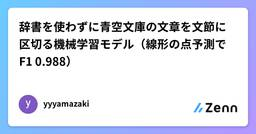
辞書を使わずに青空文庫の文章を文節に区切る機械学習モデル（線形の点予測で F1 0.988）
Zennの「機械学習」のフィード
青空速読 RSVPリーダーは、青空文庫の作品を RSVP で読む iOS アプリです。 RSVP（Rapid Serial Visual Presentation）は、文章を短い語句に区切り、画面の同じ位置にひとつずつ表示する読み方です。行を目で追う必要がないので、視線を動かさずに、スマホの小さな画面でも速く読み進められます。フラッシュのように次々と現れる言葉を追うだけなので、通勤や待ち時間のような短い時間でも、名作を少しずつ読み進められます。 青空速読 RSVPリーダーは、文章を文節ほどの長さに区切り、画面の中央にひとつずつ表示します。この読み方では、語の途中で切れると、読み手は次の表...
2日前

量子機械学習の初期レビューから見える世界 Zennの「機械学習」のフィード
手書きの数字を見分けたり、見たことのない手書き数字の画像を作ったりするには、データの中にあるパターンを学ぶ必要があります。これが機械学習です。では、その学習の一部を量子コンピュータに任せると、何が変わるのでしょうか。 Jacob Biamonteらの『Quantum Machine Learning』は、この問いをさまざまな角度から整理しています。この記事では、量子に期待される利点を「計算を速くする」「複雑な分布からサンプルを得る」「量子の状態を直接調べる」の3つに分けて紹介します。Biamonteらのレビュー（Nature、2017年） · たとえば、手書きの「3」と「8」を見分ける機...
2日前
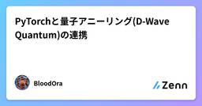
PyTorchと量子アニーリング(D-Wave Quantum)の連携 Zennの「機械学習」のフィード
量子アニーリングは、量子ゆらぎ組合せ最適化において最適解を探索する手法[1]として知られていますが、近年では機械学習で必要なサンプルを高速に得るためのサンプラーとしての研究[2]も行われています。 そうした潮流の中で、昨年8月に量子アニーリングマシンを提供するD-Wave Quantum Inc.は、同社の量子アニーリングマシンをPyTorchから利用するためのオープンソースツールキットを発表しました。ツールキットは同社のOceanソフトウェア群の一部で、MNISTの手書き数字を生成するデモも同時に公開されています。D-Waveの公式発表 このデモでは、PyTorchで構築したニューラル...
2日前

「Gemini 4 Neon」が実際の標高データからスキーシミュレーターを開発――Google公式が勧める利用例まとめ 2ITmedia AI＋ 最新記事一覧
Googleが新発表したAIモデル「Gemini 4 Neon」について、公式ブログで披露されたデモや日常での活用場面をまとめて紹介する。
2日前

Obsidian公式の「エージェント向け」スキル集が登場 Vault操作法とファイル形式をひとまとめに 53ITmedia AI＋ 最新記事一覧
マークダウンエディタ「Obsidian」に「エージェント向けの公式コネクタ」機能が登場した。
2日前

GPT-6.2の使用量「誤って割引されていた」 修正後はAstraで上限に40％早く達する見込み 2ITmedia AI＋ 最新記事一覧
OpenAIのプロダクト責任者ティボー・ソティオ氏（通称Tibo）は「GPT-6.2 Astra」と「GPT-6.2 Sol」の使用量の計算に誤りがあり、実際よりも少なく計算されていたとXで明かした。
2日前

飲食店の“AI商品画像”は景品表示法違反にならないの？ 弁護士の見解 40ITmedia AI＋ 最新記事一覧
飲食店のメニューにAIで生成した画像を使用した場合を例に、生成AIによる商品画像と景品表示法の関係について考える。
2日前

家計データをなぜ「Muse」「ChatGPT」に渡すのか？ マネーフォワードに聞いた狙いと安全策 3ITmedia AI＋ 最新記事一覧
頼んでもいないのに、AIが朝一番にカードの引き落としと預金を照らし合わせて知らせてくる。家計簿アプリ「マネーフォワード ME」のデータがMetaのMuseに届くようになったからだ。だが家計の記録は、マネーフォワードにとって最大の資産のはず。なぜ外のAIに差し出したのか。安全は誰が守るのか。
2日前

「Claude Duet」日本でも開始 AnthropicのAIエージェント、研究プレビューを米国外に拡大 2ITmedia AI＋ 最新記事一覧
前にウェイトリストに登録していた「Pro」「Max」「Ultra」ユーザー向けに招待が届き始めており、「招待が来た」と報告する日本のユーザーが相次いでいる。
3日前

脆弱性の発見数、1年で2倍超 Microsoft製品も月100件から1000件超に……AIで一変 36ITmedia AI＋ 最新記事一覧
米Microsoftが毎月公開しているWindowsのセキュリティ更新プログラム。11月は1000件以上の脆弱性が修正された。他社の製品も含めると、2026年に入って発見された脆弱性は10万件を超え、すでに25年の倍以上だ。AIの進化に伴い脆弱性の発見とそれを悪用した攻撃が激増する中で、パッチを適用する側はどう対処すればいいのか。
3日前

Character.AIのチャット履歴競売に41州とワシントンD.C.が異議 未成年者の約210万アカウント分も対象 20ITmedia AI＋ 最新記事一覧
米カリフォルニアやコネチカットなど41州とワシントンD.C.の司法長官は、破産申請した「Character.AI」の資産競売に異議を申し立てた。競売には未成年者の210万以上を含む2100万超のチャット履歴が含まれるが、買い手にデータ保護の義務がなく、プライバシー法に反するとして売却の却下を求めている。
3日前

旅行会社に残る価値は？ 生成AIに「旅の相談」が当たり前の今、業界の生存戦略 18
ITmedia AI＋ 最新記事一覧
検索から予約、決済まで自律的にこなす「AIエージェント」の普及で、旅行会社の存在意義が問われている。日本旅行業協会（JATA）主催のシンポジウムに旅行・食・IT・大手旅行会社のプロ4人が登壇。「おいしい」を味わう感覚や、顧客の言葉の裏にある本音までは読み取れないAIの限界を指摘し、AIによる業務効率化で生み出した時間を「信頼関係」や現場の感動体験に振り向ける共創の生存戦略を議論した。
3日前

GitHubに「人には見えない隠し文字」 小型AIの操作狙うものも……1億4500万件を調査 25ITmedia AI＋ 最新記事一覧
イスラエルのセキュリティ会社Radwareとテクニオン・イスラエル工科大学に所属する研究者らが発表した論文「Who Is Prompt-Injecting Coding Agents? An Empirical Study of Hidden AI-Directed Text on GitHub」は、GitHub上に潜むAI向けの隠しテキストが、誰によってどのような目的で埋め込まれているのかを分析した研究報告だ。
3日前

AnthropicのアモデイCEO、「人間の自由意志をAIに明け渡す」考えを否定 AI企業間で議論
15ITmedia AI＋ 最新記事一覧
Anthropicのダリオ・アモデイCEOは、超知能AIに人間の意思決定権を委ねるべきだと考えているとしたAxiosの報道をXで否定した。社会の統治と個別タスクの自動化を混同していると反論し、AIは民主的プロセスで管理されるべきだと強調した。超知能時代の主導権を巡っては、OpenAIやMeta幹部も発言しており議論が広がっている。
3日前

図面を探す時間から技能を伝える時間へ、AI活用で業務効率化を進める空研工業 2 ITmedia AI＋ 最新記事一覧
創業70周年を迎えた空研工業は、長年蓄積してきた図面や技術資料をAIで活用する「AIナレッジ基盤システム」をRecursiveと共同開発した。試行利用の結果を基にした試算では、図面検索工数を最大約90％削減する見通しで、業務効率化の先には技能伝承も見据える。AI活用に至った背景や現場が抱えていた課題、試行利用で得られた手応えについて、工場長と現場の技術者に話を聞いた。
3日前

国内造船業再生の鍵はフィジカルAI、デジタルシップヤード開発の現状を知る 2 ITmedia AI＋ 最新記事一覧
政府策定の「造船業再生ロードマップ」では、AIとロボット技術を組み合わせたフィジカルAIによる建造工程の自動化が求められている。「造船業界におけるAI・ロボティクス普及に向けたシンポジウム」では、ジャパン マリンユナイテッドや川崎重工業、ソフトバンクロボティクス、日立の取り組みが紹介された。
3日前

管理職の約7割が黙認するシャドーAIの現実 「相談すると禁止されそう」「承認が遅い」  ITmedia AI＋ 最新記事一覧
ITmedia AI＋ 最新記事一覧
企業が安全なAI環境を整備する一方で、現場では非公式なツールの利用がまん延している。ルールの順守よりも業務スピードを優先せざるを得ない現場のジレンマと、IT統制の限界が調査で浮き彫りになった。
3日前
11/22 (日)

ニューラルネットワークを“信頼の社会”として読む Zennの「ディープラーニング」のフィード
ニューラルネットワークを「数式の塊」ではなく、“判断と信頼で構成された組織”として読み解く小さな本です。面接官・会議・社長という比喩を使って、内積・行列・誤差逆伝播・活性化関数・重み・バイアスが「何を意味しているのか」を感覚でつかみます。本書の比喩をそのまま動かせる可視化アプリ（https://ofcbj.github.io/nn-book/）も公開しています。
6日前

AIはなぜ「確率の計算」だけで会話や創造、深い推論までできるのか？—基礎から紐解くLLMの仕組みと進化 Zennの「ディープラーニング」のフィード
「ChatGPTなどの生成AIは、結局のところ『次に来る言葉を確率で予測して表示しているだけ』」 AIの仕組みを学び始めると、必ずと言っていいほどこの説明に出会います。しかし、ここで多くの人が一つの素朴な疑問にぶつかります。 「単なる確率計算なら、決まりきった定型文しか作れないのでは？ なぜ見たこともない質問に答えたり、小説を書いたり、難しい数学の問題まで解けたりするのか？」 この記事では、機械学習やディープラーニングの基本的な仕組み（分散表現、Word2Vec、RNN/seq2seq、Transformer、強化学習など）を軸に、単なる「次単語予測」から高度な言語処理能力が生まれるメカ...
6日前